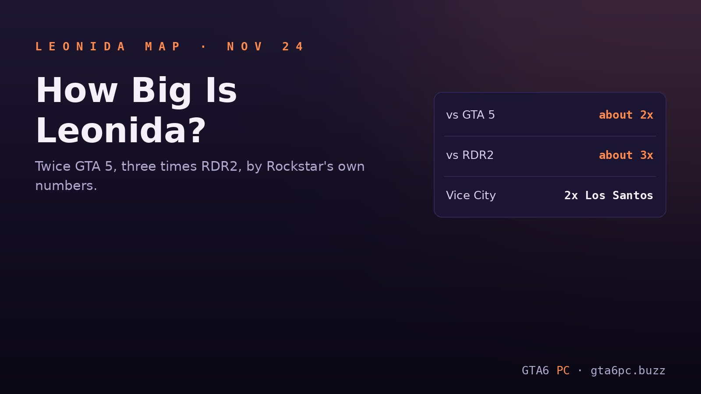

How big is the GTA 6 map?
Rockstar has never published the GTA 6 map in square kilometres, but it has said plenty about how big it is. The studio's own numbers put Leonida at about twice the size of GTA 5 and three times the playable area of Red Dead Redemption 2, with Vice City alone twice the size of Los Santos. Players have now measured the finished map too, and the figures do not all agree. Here is what Rockstar said, what the measurements show, and why the two disagree.

The short answer: twice GTA 5
The cleanest statement of the GTA 6 map size comes from Rockstar itself. Rob Nelson, co-studio head of Rockstar North, told creators and press in August 2026 that the map is twice the size of GTA 5's map and three times the size of Red Dead Redemption 2's. Aaron Garbut, Rockstar's art director, repeated the twice-GTA-5 figure to Game Informer in September 2026, calling Leonida the biggest map the studio has ever made. Rockstar also told Edge magazine in October 2026 that the total landmass is nearly as large as the playable maps of GTA 4, GTA 5 and Red Dead Redemption 2 combined.
Those are ratios, not measurements, and that distinction matters. Rockstar has never given the map's area in square kilometres or square miles. Every number in kilometres you see online comes from fans who measured trailers, the community mapping project, or the finished in-game map after launch. The ratios are the official word. The kilometres are estimates, and they disagree with each other for reasons this article explains.
For PC players, the size is not trivia. A map this big decides how much storage the game needs, how much memory it uses while streaming new areas, and how much of the world your hardware has to hold at once. Our file size guide and our system requirements page cover the storage and hardware side of the same question.
The official ratios, one by one
Four ratios have been consistent across Rockstar's interviews since the August 2026 embargo lifted. The full map is about twice the size of GTA 5's map. It is about three times the playable area of Red Dead Redemption 2. Vice City alone is twice the size of GTA 5's Los Santos. And Vice City with its surrounding suburbs is 11 times larger than Los Santos with its surrounding suburbs in GTA 5.
The 11 times figure is the most revealing of the four, because it describes the built-up areas outside the main city, not the total landmass. GTA 5's map is mostly open countryside around one city. Leonida, by Rockstar's own description, is a state full of towns, suburbs and settlements around Vice City, and the area those cover is an order of magnitude larger than anything GTA 5 had outside Los Santos. That is the difference between a big city with countryside attached and a whole state to explore.
The ratios also explain why the map feels bigger than the numbers suggest. Rockstar designed Leonida around real Florida geography, placing the Everglades, the towns around Miami and Miami itself roughly where they sit in the real state, then compressing the distances between them. The result is a map where the drive between two places feels like a journey, not a loading screen, and where the space between the named locations is filled with things to find rather than empty road.
The measured estimates, and why they disagree
Once the game launched on November 19, players could measure the finished map for the first time. The main measurement so far comes from PowerPyx, published November 18, which puts the in-game map at 175 square kilometres (67.5 square miles), counting sea, with about 35 percent water and 65 percent land. The map measures about 16 kilometres by 10.9 kilometres as a rectangle.
The community mapping project, which spent two years measuring trailers and leaks before launch, gives a different number: about 85.6 square kilometres of land in its version 16 map, against an earlier 2024 estimate of 125 square kilometres. Other community estimates for land and water combined range from about 33 to 59 square miles. These figures do not line up, and the reason is simple: they count different things. PowerPyx counts the full rectangle of the in-game map, sea included. The community project counts land only. The pre-launch estimates were made before anyone could see the finished map.
The honest answer is that Rockstar's ratios are the reliable figures and the kilometre numbers are useful but approximate. If you want one number to quote, use PowerPyx's 175 square kilometres including sea, and say so. If you want the land-only figure, the community project's 85.6 square kilometres is the best available. Do not mix the two, and do not present either as Rockstar's own number, because Rockstar has not given one.
One more comparison helps put the size in perspective. Fan measurements put GTA 5's map at about 75.84 square kilometres including water, and about 49 square kilometres of land. Red Dead Redemption 2's map is about 78 to 85 kilometres across by the same kind of measurement. Twice GTA 5 gives roughly 150 square kilometres, three times Red Dead Redemption 2 gives roughly 225, and the measured 175 sits between those two rough answers, which is about what you would expect from ratios that were never meant to be exact.
How long does it take to cross?
The number players actually feel is the drive time. An enthusiast estimate puts crossing the whole GTA 6 map at around 35 minutes of real-world driving time. For comparison, crossing GTA 5 takes about 10 to 15 minutes by car, and crossing Red Dead Redemption 2 takes about 15 to 16 minutes on horseback. That is the size difference you will notice in play: a trip across Leonida is a commitment, not a quick hop.
That matters for how the game plays, not just how big it looks on a map screen. Longer drives mean more of the game happens on the road, more radio, more random encounters, and more reason to use fast travel or planes. It also means the world needs more to fill it, which is where the 600,000-plus animations Rockstar has reported come in, against 55,000 in GTA 5 and 300,000 in Red Dead Redemption 2. A map this size with GTA 5's density would feel empty. Rockstar's answer, on its own numbers, is to fill it with far more life.
The six regions of Leonida
Rockstar names six places on its official site, and these are the regions the map is built around. Vice City is the neon heart of Leonida, twice the size of Los Santos. The Leonida Keys are the island chain to the south. Grassrivers is the swamp wilderness, Rockstar's version of the Everglades. Port Gellhorn is the faded resort town on the coast. Ambrosia is the rural heartland, and Mount Kalaga National Park is the wild north of the state.
The site also names three more places without the same level of description: Lake Leonida, home to One-Eyed Willie's Mod Shop, an Ultimate Edition bonus; Watson Bay, home to the Paradise Garage, also an Ultimate Edition bonus; and Southside Vice City. The in-game map also lists counties, which the guide sites have catalogued, but Rockstar's six regions are the official shape of the state.
For PC players waiting on the official version, the map is the one part of the game that will not change between platforms. The same Leonida, the same six regions, the same drive times. What changes on PC is the view: draw distance, detail, lighting and frame rate. Our PC build guide covers the hardware that will show it best, and our release date page tracks when PC players will finally get to drive it.
Quick answers
How big is the GTA 6 map in square kilometres?
Rockstar has published no official area figure. The best measurement of the finished in-game map is 175 square kilometres (67.5 square miles) including sea, of which about 35 percent is water. Land-only community estimates are around 85.6 square kilometres.
Is the GTA 6 map bigger than GTA 5?
Yes. Rockstar says Leonida is about twice the size of GTA 5's map, and Vice City alone is twice the size of Los Santos. The studio also says the total landmass is nearly as large as the GTA 4, GTA 5 and Red Dead Redemption 2 maps combined.
How long does it take to drive across the GTA 6 map?
An enthusiast estimate puts it at around 35 minutes of real-world driving time. For comparison, crossing GTA 5 takes about 10 to 15 minutes by car, and crossing Red Dead Redemption 2 takes about 15 to 16 minutes on horseback.
What regions are in the GTA 6 map?
Rockstar names six places on its official site: Vice City, the Leonida Keys, Grassrivers, Port Gellhorn, Ambrosia and Mount Kalaga National Park. The site also names Lake Leonida, Watson Bay and Southside Vice City.
Will the GTA 6 map be bigger on PC?
No. The map is the same on every platform. What changes on PC is how it looks and runs: higher resolutions, better draw distances, ray tracing and faster loading on good hardware. Our system requirements page covers what that takes.
How big is Vice City compared to Los Santos?
Rockstar says Vice City alone is twice the size of GTA 5's Los Santos. The built-up areas around Vice City are 11 times larger than the equivalent suburbs in GTA 5.
Last updated . We update this page when Rockstar announces anything new.
Sources
- Beebom: How Big Is GTA 6's Map Compared to GTA 5 and RDR2
- Games.gg: GTA 6 Map Is Twice the Size of GTA 5
- VietRPG: GTA 6 map, Leonida's regions, cities and size compared with GTA 5
- MapHeist: GTA 6 map size, how big Leonida is in square kilometres and how it compares to GTA 5 and RDR 2
- The World Data: GTA 6 Map Size Statistics 2026, Leonida Map, Vice City, Locations, Regions and Real-World Comparisons